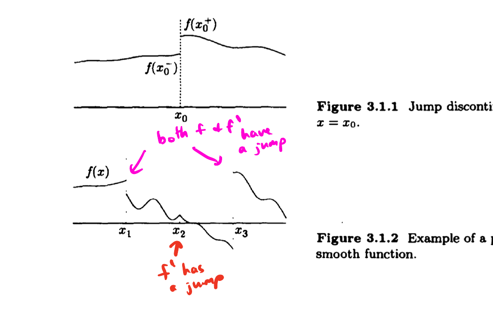
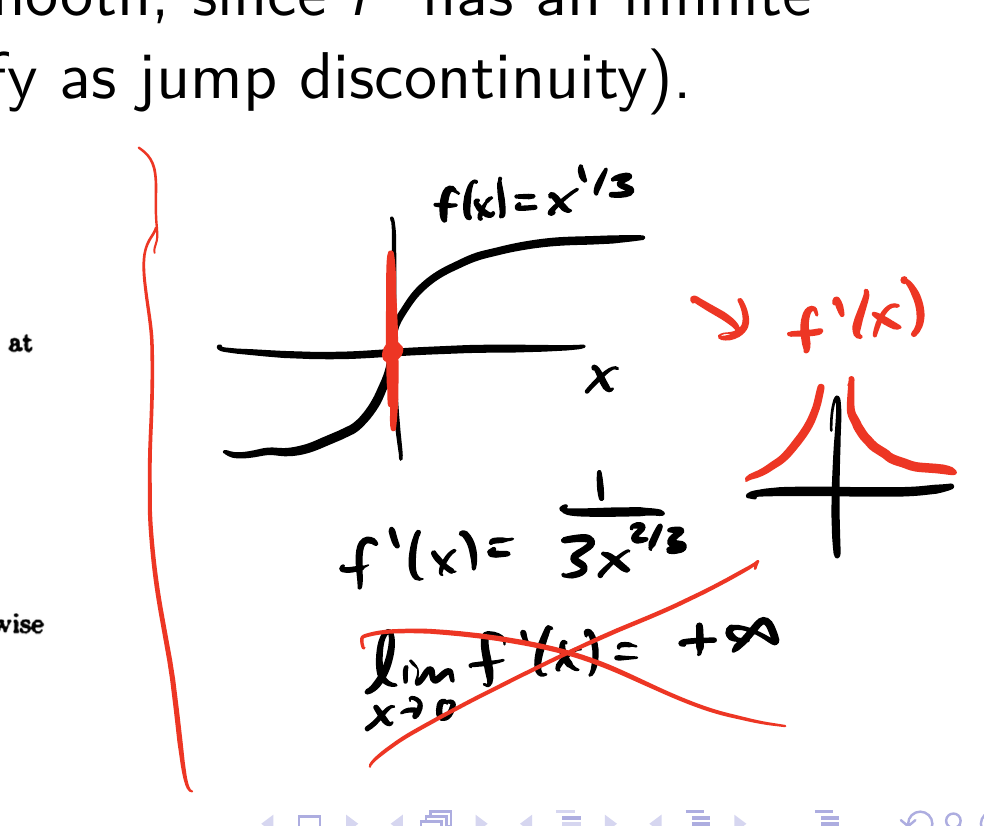
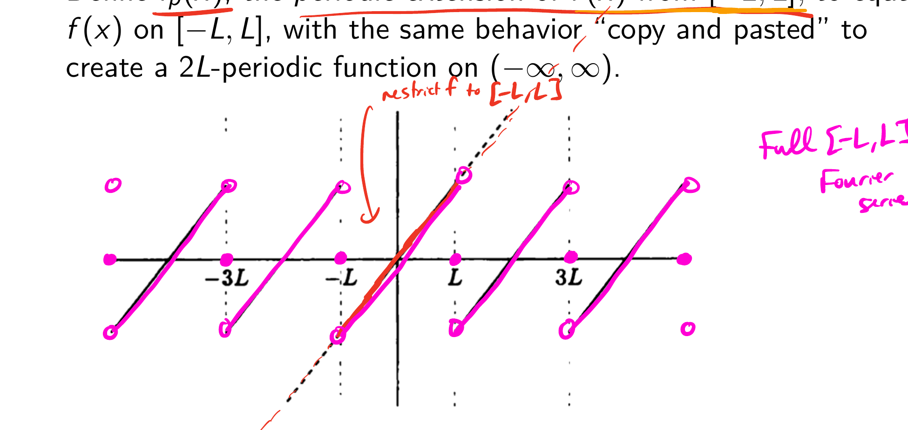
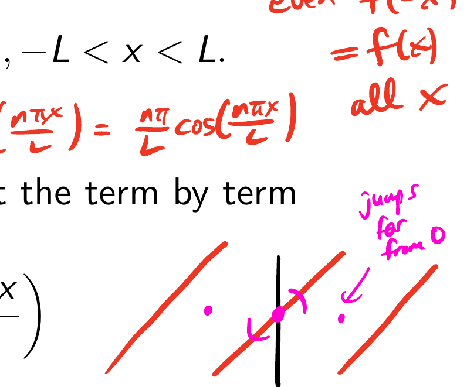
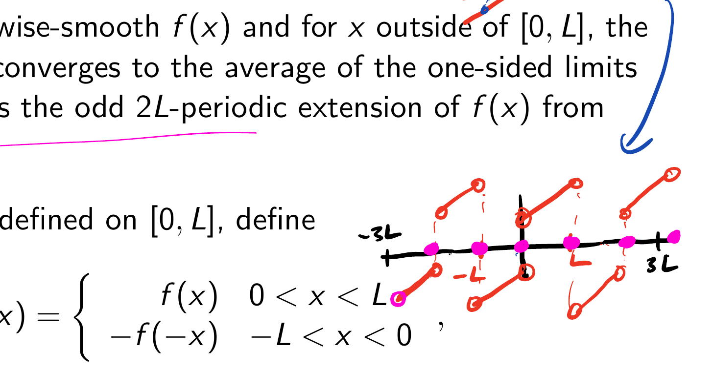
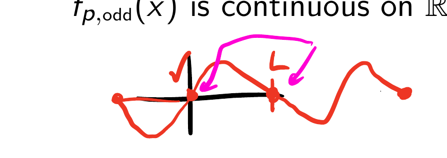
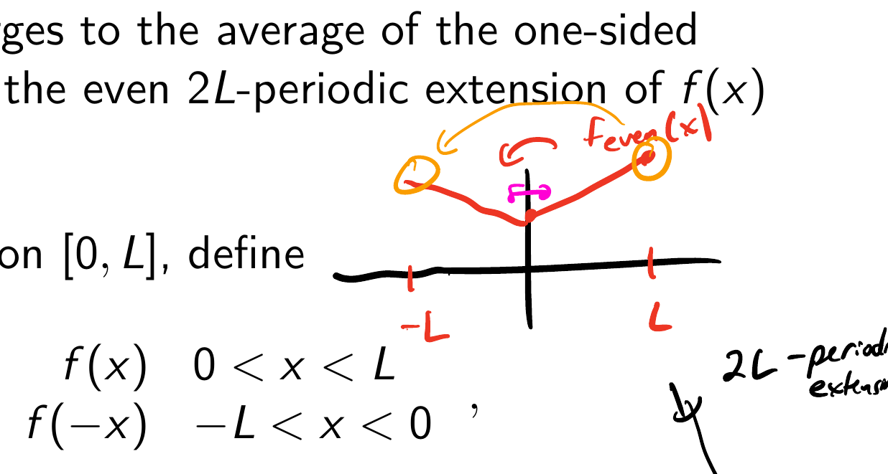
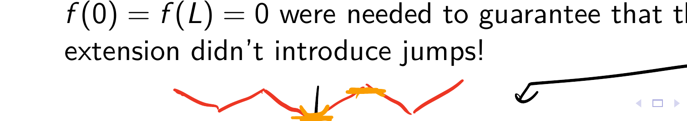

Ch 3: Fourier Series Theory
We consider the setting that gave us both sines and cosines — periodic boundary conditions on $[-L, L]$. Provided $f$ has a Fourier series — that is, if we assume we can write
$$f(x) = a_0 + \sum_{n=1}^{\infty} a_n\cos\!\left(\frac{n\pi x}{L}\right) + \sum_{n=1}^{\infty} b_n\sin\!\left(\frac{n\pi x}{L}\right),$$we exploited standard integral calculations to show we'd need
2/26
For which functions $f$ can the coefficients be defined? For these functions, do their Fourier series converge? Do they converge to $f(x)$?
Examples of issues of Taylor series expansions include
$$\frac{1}{1-x} = 1 + x + x^2 + x^3 + \cdots$$which diverges for $|x| \ge 1$, while
$$f(x) = \begin{cases} e^{-1/x^2} & x \neq 0 \\ 0 & x = 0 \end{cases}$$is an example of an infinitely differentiable function whose Maclaurin series converges for all $x$, but does not converge to $f(x)$ on any interval. (The derivatives of this "infinitely flat function" all satisfy $0 = f(0) = f'(0) = f''(0) = f'''(0) = \cdots$.)
3/26
We consider functions $f(x)$ that are piecewise smooth on $[-L, L]$.
This means that away from finitely many jump discontinuities, both $f$ and $f'$ are continuous.
Our definition of a jump discontinuity at $x_0$ requires the left and right limits $f(x_0^\pm)$ exist (as finite numbers!) but are not equal.
E.g. $f(x) = x^{1/3}$ is not piecewise smooth, since $f'$ has an infinite discontinuity (which we don't classify as a jump discontinuity).


4/26
By considering piecewise smooth functions, we've guaranteed the Fourier coefficients can be defined.
In this case, we write
$$f(x) \sim a_0 + \sum_{n=1}^{\infty} a_n\cos\!\left(\frac{n\pi x}{L}\right) + \sum_{n=1}^{\infty} b_n\sin\!\left(\frac{n\pi x}{L}\right),$$and reserve "$=$" to mean "RHS converges" AND "RHS sum equals $f(x)$".
Note that $f$ only needs to be defined on at least $[-L, L]$ for the above to make sense; in other words $[-L, L]$ doesn't need to have any particular significance for $f$. However, $[-L, L]$ is "built in" to the RHS because the interval $[-L, L]$ dictates which frequencies occur in the trig sums — positive integer multiples of $\dfrac{\pi}{L}$.
5/26
The RHS is periodic with period $2L$ even if $f$ is not.
Define $f_p(x)$, the periodic extension of $f(x)$ from $[-L, L]$, to equal $f(x)$ on $[-L, L]$, with the same behavior "copy and pasted" to create a $2L$-periodic function on $(-\infty, \infty)$.

If $f(-L) \neq f(L)$ this introduces jumps, but finitely many jumps were permitted within $[-L, L]$ so this is no problem — if $f$ is piecewise smooth on $[-L, L]$ so is $f_p(x)$.
6/26
Theorem (Fourier's Theorem): If $f(x)$ is piecewise smooth on $[-L, L]$, then
where $f_p$ is the periodic extension from $[-L, L]$. Here $f_p(x^\pm)$ are the one-sided limits of $f_p(\cdot)$ at $x$.
Since $f_p(x^\pm) = f_p(x)$ anywhere the periodic extension is continuous, and we quickly know how $f_p(x)$ relates to $f(x)$, this is a very powerful convergence theorem. (These trig sums are better behaved than power series!)
In addition, converging to the average of the two one-sided limits at any jumps is about as nice as things could get as well.
7/26
The proof is difficult and outside the scope of this class.
Convergence in $L^2[-L,L]$ norm (square integrable functions) uses vector space / inner product arguments — the key step is Parseval's identity which relates the $L^2$ norm of $f(x)$ with the $\ell^2$ norm of the Fourier coefficient sequence.
Convergence pointwise (what we stated above) is a bit more difficult — we need to write "Fourier partial sums" as convolutions with what are called Dirichlet kernels. Unfortunately, these Dirichlet kernels do not have the nice properties that "delta kernels" do, so establishing pointwise convergence to $f(x)$ at points of continuity (and to the average of one-sided limits at jumps) is more difficult.
See Stein & Shakarchi, Princeton Lectures in Analysis Volume 1 for proofs from scratch.
8/26
The rigorous justification of why an infinite linear combination
$$u(x,t) = a_0 + \sum_{n=1}^{\infty}\left[a_n\cos\!\left(\frac{n\pi x}{L}\right) + b_n\sin\!\left(\frac{n\pi x}{L}\right)\right]e^{-k(n\pi/L)^2 t}$$solves $\dfrac{\partial u}{\partial t} = k\dfrac{\partial^2 u}{\partial x^2}$ (with periodic boundary conditions) requires justifying the following:
$$\frac{\partial}{\partial t}\sum_{n=0}^{\infty} u_n = \sum_{n=0}^{\infty}\frac{\partial u_n}{\partial t}, \qquad \frac{\partial^2}{\partial x^2}\sum_{n=0}^{\infty} u_n = \sum_{n=0}^{\infty}\frac{\partial^2 u_n}{\partial x^2}.$$This is really a question of whether the two limit processes (difference quotient limit for derivative and partial sum limit for series convergence) commute — which we should not assume always works! We'll see a counterexample today! (This bad behavior can't occur for the PDE contexts we consider, where boundary conditions ensure things work out as expected.)
9/26
Theorem: Provided $\limsup_{n\to\infty} |a_n|^{1/n} =: R^{-1} < \infty$, the power series
$$\sum_{n=0}^{\infty} a_n(x-c)^n$$is differentiable for $c - R < x < c + R$ with derivative given by
$$\sum_{n=1}^{\infty} n\,a_n(x-c)^{n-1},$$and the derivative series has the same radius of convergence.
This follows from the uniform convergence of power series within their interval of convergence, discussed in Math 312/403.
10/26
Carefully calculating derivatives of Fourier series requires integration by parts to match the corresponding coefficients (see line 3.4.11 in textbook), requiring we keep track of any discontinuities / deal with boundary terms.
Even if $f$ and $f'$ are continuous, if $f$ isn't periodic then its periodic extension will have jump discontinuities, leading to the derivative calculation being more involved than simple "term-by-term" (see 3.4.13).
11/26
Since $f(x) = x$ is odd, its Fourier series on $[-L, L]$ consists of sines only:
$$x \sim 2\sum_{n=1}^{\infty}\frac{L}{n\pi}(-1)^{n+1}\sin\!\left(\frac{n\pi x}{L}\right).$$By Fourier's theorem, we have
$$x = 2\sum_{n=1}^{\infty}\frac{L}{n\pi}(-1)^{n+1}\sin\!\left(\frac{n\pi x}{L}\right), \quad -L < x < L.$$The derivative $\dfrac{d}{dx}x = 1$ satisfies $1 \sim 1$, but the term-by-term derivative
$$2\sum_{n=1}^{\infty}(-1)^{n+1}\cos\!\left(\frac{n\pi x}{L}\right)$$diverges everywhere since the terms don't approach zero!

12/26
Note that even if we focus on a small interval containing $x = 0$, far away from the "periodicity problem", we still have issues with convergence of the series!
This contrasts with the power series context, in which the Taylor series for $f(x)$ centered at $a$ only involves $f(a), f'(a), f''(a), \ldots$ which are defined by the values of $f$ on any (as small as we wish) neighborhood of $a$ — that is, Taylor series use only "local" information about $f$.
The Fourier coefficients use the values of $f$ on all of $[-L, L]$, so take into account the "global" behavior. Discontinuities of $f_p$ away from a value $x_0$ can cause the Fourier series to diverge at $x_0$, as seen in the previous example.
13/26
Theorem: If $f(x)$ has a continuous Fourier series and $f'(x)$ is piecewise smooth, then the Fourier series for $f'(x)$ is the term-by-term derivative of the Fourier series for $f(x)$.
Combining with Fourier's theorem: If $f(x)$ is a continuous piecewise smooth function that satisfies $f(-L) = f(L)$, then its Fourier series is continuous by Fourier's theorem. Therefore, its Fourier series can be differentiated term-by-term to obtain the Fourier series for $f'(x)$.
This justifies the partial derivatives for "infinitely superimposed solutions" with respect to whichever variable we used for the Fourier expansion, at least for the periodic boundary condition case (third column in the reference sheet).
14/26
Theorem: The Fourier series of a continuous function $u(x,t)$ (where we think of $t$ as a parameter)
$$u(x,t) = a_0(t) + \sum_{n=1}^{\infty}\left(a_n(t)\cos\frac{n\pi x}{L} + b_n(t)\sin\frac{n\pi x}{L}\right)$$satisfies
$$\frac{\partial u}{\partial t}(x,t) \sim a_0'(t) + \sum_{n=1}^{\infty}\left(a_n'(t)\cos\frac{n\pi x}{L} + b_n'(t)\sin\frac{n\pi x}{L}\right)$$provided $\dfrac{\partial u}{\partial t}$ is piecewise smooth.
15/26
For $f$ piecewise smooth, we write
$$f(x) \sim \sum_{n=1}^{\infty} B_n\sin\!\left(\frac{n\pi x}{L}\right)$$to mean
$$B_n := \frac{2}{L}\int_0^L f(x)\sin\!\left(\frac{n\pi x}{L}\right)dx.$$In general, this Fourier sine series converges to the average of jumps for $0 < x < L$, and $0$ for $x = 0, L$. However, if $f$ is continuous, with $f'$ piecewise smooth, and $f(0) = f(L) = 0$, then
and can be differentiated term-by-term provided $f'(x)$ is piecewise smooth — that is, the BC in the first column on the reference sheet guarantee the expected derivative behavior.
16/26
For a general piecewise-smooth $f(x)$ and for $x$ outside of $[0, L]$, the Fourier sine series converges to the average of the one-sided limits of $f_{p,\text{odd}}(x)$, which is the odd $2L$-periodic extension of $f(x)$ from $[0, L]$.
Starting with $f(x)$ defined on $[0, L]$, define
$$f_{\text{odd}}(x) = \begin{cases} f(x) & 0 < x < L \\ -f(-x) & -L < x < 0 \end{cases},$$and then construct the $2L$-periodic extension of the above to obtain a function $f_{p,\text{odd}}(x)$ that is odd and $2L$-periodic.

Theorem: If $f(x)$ is continuous on $[0, L]$ and $f(0) = f(L) = 0$, then $f_{p,\text{odd}}(x)$ is continuous on $\mathbb{R}$.

17/26
Similarly, for $f$ piecewise smooth, we write
$$f(x) \sim \sum_{n=0}^{\infty} A_n\cos\!\left(\frac{n\pi x}{L}\right)$$to mean
$$A_0 := \frac{1}{L}\int_0^L f(x)\,dx, \qquad A_n := \frac{2}{L}\int_0^L f(x)\cos\!\left(\frac{n\pi x}{L}\right)dx.$$In general, this Fourier cosine series converges to the average of jumps for $0 < x < L$, with $x = 0, L$ convergence guaranteed. Therefore, if $f$ is continuous and $f'$ is piecewise smooth, then
and can be differentiated term-by-term provided $f'(x)$ is piecewise smooth — that is, the BC for the second column of the reference sheet guarantee the expected derivative behavior.
18/26
For a general piecewise-smooth $f(x)$ and for $x$ outside of $[0, L]$, the Fourier cosine series converges to the average of the one-sided limits of $f_{p,\text{even}}(x)$, which is the even $2L$-periodic extension of $f(x)$ from $[0, L]$.
Starting with $f(x)$ defined on $[0, L]$, define
$$f_{\text{even}}(x) = \begin{cases} f(x) & 0 < x < L \\ f(-x) & -L < x < 0 \end{cases},$$and then construct the $2L$-periodic extension of the above to obtain a function $f_{p,\text{even}}(x)$ that is even and $2L$-periodic.

Theorem: If $f(x)$ is continuous on $[0, L]$, then $f_{p,\text{even}}(x)$ is continuous on $\mathbb{R}$.

19/26
These theorems guarantee our "infinite linear combinations of product solutions" in fact solve the PDEs we've been studying, since we always have suitable BC to avoid the pathological cases.
(It turns out for the heat equation that discontinuous initial conditions are immediately smoothed for $t > 0$, something we may explore with Fourier transforms later, so even if the initial data has jumps in the interior of the spatial interval, the continuity requirements for $u$ and $\dfrac{\partial u}{\partial x}$ are immediately satisfied for positive times.)
The text has some details of the proofs assuming Fourier's theorem, as well as consequences of uniform convergence of Fourier series of continuous periodic functions whose derivatives are piecewise continuous (not discussed in detail in our text, but see e.g. Real Analysis by Carothers Chapters 10, 15 for more details.)
20/26
Regarding the power series discussion earlier, convergence is guaranteed to be absolute for $c - R < x < c + R$ for both the series and its derivative. Both diverge for $x$ strictly outside; a convergent endpoint might be divergent for the derivative series.
Integration term-by-term for power series can also be done, and cannot change $R$ either. However, divergent endpoints might become convergent in the antiderivative series.
This can be seen in the identities
$$\ln(1+x) = \sum_{n=1}^{\infty}\frac{(-1)^{n-1}x^n}{n} \quad \text{for } -1 < x \le 1$$while
$$\frac{1}{1+x} = \sum_{n=0}^{\infty}(-1)^n x^n \quad \text{for } -1 < x < 1.$$21/26
Theorem: A Fourier series for a piecewise smooth $f(x)$ can always be integrated term by term and the result is a convergent infinite series that always converges to the integral of $f(x)$ for $-L \le x \le L$, even if the original Fourier series has jump discontinuities.
22/26
Thinking about how derivatives and antiderivatives work, for differentiation it's clear we're obtaining a Fourier series but for antiderivatives we'll have a linear term (not trigonometric!) if $a_0 \neq 0$. This is why we didn't assert that the term-by-term antiderivative of the Fourier series always converges to the Fourier series of the antiderivative.
23/26
Easy Math 140 calculation shows
$$1 \sim \frac{4}{\pi}\left(\sin\frac{\pi x}{L} + \frac{1}{3}\sin\frac{3\pi x}{L} + \frac{1}{5}\sin\frac{5\pi x}{L} + \cdots\right),$$where we need to write $\sim$ since this is only equal for $0 < x < L$.
Integrate term by term from $0$ to $x$ and use the result to deduce
$$x = \frac{4L}{\pi^2}\left(1 + \frac{1}{3^2} + \frac{1}{5^2} + \cdots\right) - \frac{4L}{\pi^2}\left(\cos\frac{\pi x}{L} + \frac{1}{3^2}\cos\frac{3\pi x}{L} + \frac{1}{5^2}\cos\frac{5\pi x}{L} + \cdots\right)$$for all $0 \le x \le L$. Take average value on $[0, L]$ to deduce
$$\frac{L}{2} = \frac{4L}{\pi^2}\left(1 + \frac{1}{3^2} + \frac{1}{5^2} + \cdots\right)$$so
for all $0 \le x \le L$.
24/26
Upcoming homework problem: calculate
$$\sum_{n=1}^{\infty}\frac{1}{n^2}$$by evaluating the above at $x = 0$. Hint: You'll first find
$$\sum_{\substack{n \ge 1 \\ n\;\text{odd}}}\frac{1}{n^2},$$then think carefully how
$$\sum_{\substack{n \ge 1 \\ n\;\text{odd}}}\frac{1}{n^2}, \quad \sum_{\substack{n \ge 1 \\ n\;\text{even}}}\frac{1}{n^2}, \quad \sum_{n=1}^{\infty}\frac{1}{n^2}$$are related.
The value of this sum is the solution of the "Basel problem" posed by the Bernoullis and originally solved by Euler (1735), but not using this Fourier series approach (which Fourier introduced later in 1822).
25/26
It turns out
$$\sum_{n=1}^{\infty}\frac{1}{n^{\text{even}}}$$are the well understood Bernoulli numbers, while the odd case is not nearly as well understood. For complex $s$, we can define
$$\zeta(s) := \sum_{n=1}^{\infty}\frac{1}{n^s},$$the Riemann-Zeta function — proving where the zeros are in the complex plane is literally a million dollar question. This is the realm of analytic number theory.
26/26